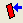
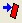
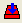
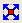

好きな方向にグラフを回転させます。
指定した角度でZ軸を反時計回りに回転します。Note: 3DXYYグラフではY軸上で反時計回りに回転します。3D三点グラフではZh軸上で反時計回りに回転します。
指定した角度でZ軸を時計回りに回転します。Note: 3DXYYグラフではY軸上で時計回りに回転します。3D三点グラフではZh軸上で時計回りに回転します。

指定した角度だけ3Dグラフを左方向に傾けます。

指定した角度だけ3Dグラフを右方向に傾けます。

指定した角度だけX軸を手前方向に傾けます。
指定した角度だけX軸を奥方向に傾けます。
3Dグラフの視野角を3度大きくします。
3Dグラフの視野角を3度小さくします。

グラフをレイヤ枠に合わせます。
立方体角度と視野角度のみリセットします。
立方体角度、軸の長さ、せん断、投影をデフォルトの設定にリセットします。
回転ボタンに対する回転角度(度単位)を選択/入力します。